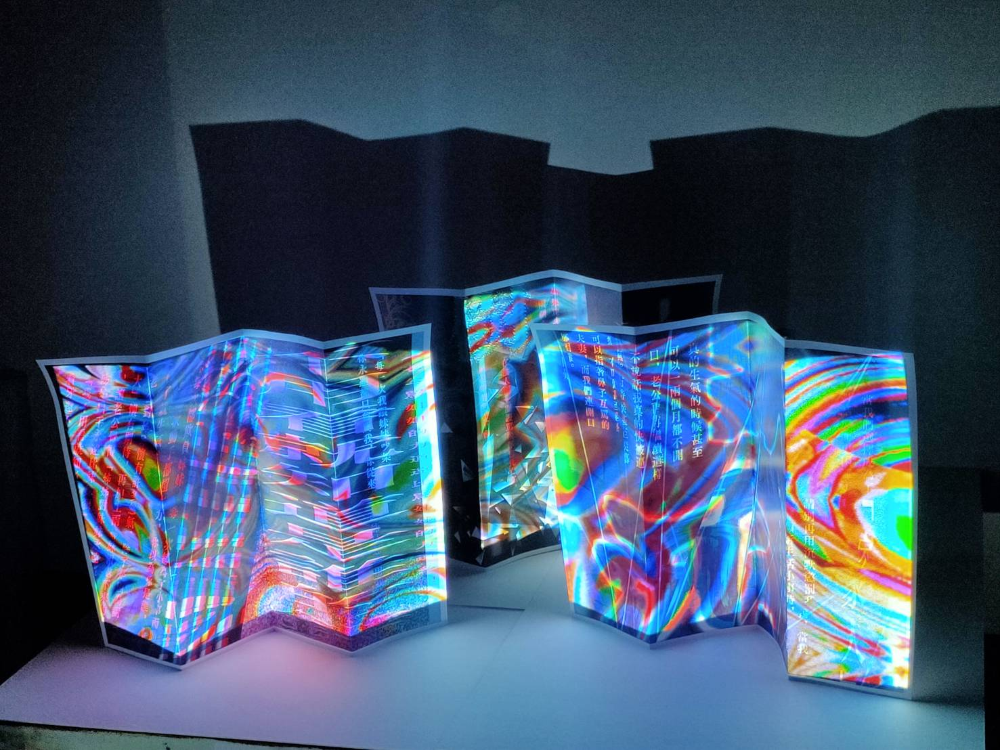

Relational Shadows
本次光雕投影計畫旨在結合藝術與科技，透過細緻的視覺設計，為即將到來的節日增添歡樂與溫馨氛圍。繽紛的燈光動畫、象徵祝福與團聚的圖像符號，以及與觀眾情感連結的故事畫面，搭配動態音效與場域氛圍，打造一場富有節慶感的沉浸式光雕體驗。
整體視覺效果設計靈感來自對「節日」的抽象想像——不再只是具象的節慶符號，而是聚焦於人們在節日中所感受到的情緒：期待、溫柔、喜悅與片刻的停留。我們將透過流動的光影、如煙花般綻放的粒子特效，以及如星雲般的色彩漸變，構築一段沉浸式的視覺旅程，彷彿走進一場在夜空下悄然展開的夢。
整體視覺效果設計靈感來自對「節日」的抽象想像——不再只是具象的節慶符號，而是聚焦於人們在節日中所感受到的情緒：期待、溫柔、喜悅與片刻的停留。我們將透過流動的光影、如煙花般綻放的粒子特效，以及如星雲般的色彩漸變，構築一段沉浸式的視覺旅程，彷彿走進一場在夜空下悄然展開的夢。
This projection mapping project aims to combine art and technology to add joy and warmth to the upcoming festival through meticulous visual design. Colorful light animations, graphic symbols that symbolize blessing and reunion, and story scenes that connect with the audience's emotions, combined with dynamic sound effects and field atmosphere, create an immersive light sculpture experience with a festive feel.
The overall visual design is inspired by the abstract imagination of "festival" - no longer just a concrete festival symbol, but focuses on the emotions people feel during the festival: anticipation, tenderness, joy and a moment of stay. We will construct an immersive visual journey through flowing light and shadow, particle effects that bloom like fireworks, and color gradients like nebulas, as if walking into a dream quietly unfolding under the night sky.
The overall visual design is inspired by the abstract imagination of "festival" - no longer just a concrete festival symbol, but focuses on the emotions people feel during the festival: anticipation, tenderness, joy and a moment of stay. We will construct an immersive visual journey through flowing light and shadow, particle effects that bloom like fireworks, and color gradients like nebulas, as if walking into a dream quietly unfolding under the night sky.
光影互動設計 - 通過投影與實體物件的結合，創造出豐富的視覺層次與互動體驗。
Light and shadow interactive design - through the combination of projection and physical objects, create rich visual levels and interactive experience

空間互動設計 - 測試光影與實體物件的結合。
光影與空間的對話 - 通過投影技術與實體空間的結合，創造出豐富的視覺層次與互動體驗，讓觀眾能夠在空間中感受到人際關係的微妙變化
創造出豐富的視覺層次與互動體驗，
讓觀眾能夠在空間中感受到人際關係的微妙變化
-使用軟體 : touchdesigner
-創作年分 : 2024
-使用技術 : 程式設計、互動設計、視覺設計
-作品材質、設備 : 投影機、投影幕、電腦、麥克風、喇叭、網路攝影機